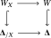
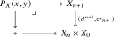
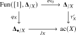
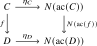

It remains to show that every univalent Segal anima comes from a category. More generally, \(N(\ac(X))\) provides a Rezk completion of any Segal anima \(X\). The main step is to compute the hom animae of \(\ac(X)\) using the calculus of last vertex fractions, showing that the unit preserves the hom animae of \(X\).
Theorem 15.5.1. For any Segal anima \(X\), the unit map \[ \eta_X\colon X\to N(\ac(X)) \] is a Dwyer–Kan equivalence.
The proof of Theorem 15.5.1 requires some preparation. We fix a simplicial anima \(X\).
Construction 15.5.2. Let \(W\) be the subcategory of last vertex maps in \(\simp\) (see the end of Construction 15.1.8).
In other words, \(W\) is the synthetic subcategory of \(\simp\) defined by
\(W^\simeq=\simp^\simeq\) with morphisms those morphisms
\[
f\colon [m]\to [n]
\]
such that \(f(m)=n\). We form the pullback square below.

From now on, we fix a term \(y : X_0\). We interpret the latter as the object \(d=([0],y)\) in \(\simp_{/X}\).
An arbitrary object \(c\) of \(\simp_{/X}\) is a pair of the form \(c=([n],x)\) for some \(n : \N\)
and \(x : X_n\). We define \(P_X(x,y)\) through the pullback square

The projection \(\simp_{/X}\to\simp\) induces a functor \[ (\simp_{/X})_{c/}\to\simp_{[n]/} \] inducing with the projection \(W_X\to W\) a canonical functor \[ q\colon W(d)_{c/}\to W_{[n]/}=\simp_{[n]/}\times_\simp W\, . \] Let \(i_n\) be the object of \(W_{[n]/}\) corresponding to the diagram \[ [n]\hookrightarrow[n]\star[0]\, . \]
Lemma 15.5.3 (Hebestreit and Steinebrunner [HS25]). Under the assumptions of Construction 15.5.2, the functor \(q\colon W(d)_{c/}\to W_{[n]/}\) is a right fibration with fiber at \(i_n\) canonically isomorphic to \(P_X(x,y)\). Furthermore, the embedding of \(P_X(x,y)\) into \(W(d)_{c/}\) as fiber of \(q\) is an initial functor, inducing a canonical equivalence \[ P_X(x,y)\iso\Pi_{\infty}(W(d)_{c/})\, . \] If furthermore \(X\) is a Segal anima, then the presheaf \[ c\mapsto \Pi_{\infty}(W(d)_{c/}) \] sends all morphisms in \(W_X\) to isomorphisms, so that \[ p_d\colon W(d)\to (\simp_{/X})_{d/} \] is a left calculus of fractions at \(d=([0],y)\) in \(\simp_{/X}\) with respect to \(W_X\).
Proof
Since \(\simp_{/X}\to\simp\) is a right fibration, so is the induced functor \[ (\simp_{/X})_{c/}\to\simp_{[n]/} \] by Proposition 6.5.7. Right fibrations being stable under pullbacks, this yields a right fibration of the form \[ (\simp_{/X})_{c/}\times_\simp W\to\simp_{[n]/}\times_\simp W\, . \] We observe that \([0]\) is an initial object of \(W\) and that \(W_X\to W\) is a right fibration (as pullback of the right fibration \(\simp_{/X}\to\simp\) along the embedding \(W\hookrightarrow\simp\)), hence we get another right fibration through another application of Proposition 6.5.7: \[ W(d)=(W_X)_{d/}\to W_{[0]/}\simeq W\, . \] Therefore, we get by pullback of the latter along the second projection \[ (\simp_{/X})_{c/}\times_\simp W\to W \] a right fibration of the form \[ (\simp_{/X})_{c/}\times_\simp (W_X)_{d/}= ((\simp_{/X})_{c/}\times_\simp W)\times_W (W_X)_{d/}\to (\simp_{/X})_{c/}\times_\simp W\, . \] Composing with the right fibration \((\simp_{/X})_{c/}\times_\simp W\to\simp_{[n]/}\times_\simp W\), this proves that the functor \[ q\colon W(d)_{c/}\to W_{[n]/} \] is a right fibration as composition of two right fibrations.
We observe that \(i_n : (W_{[n]/})^\simeq\) is an initial object. Indeed, an object in \(W_{[n]/}\) is a morphism \(u\colon [n]\to [m]\). A morphism from \(u\colon [n]\to [m]\) to \(u'\colon [n]\to [m']\) is a morphism \(f\colon [m]\to [m']\) such that \(f\circ u=u'\) and \(f(m)=m'\). For \(u\colon [n]\to [m]\), there is a unique map \(\tilde{u}\colon [n+1]\to [m]\) such that \(\tilde{u}(i)=u(i)\) for \(i : [n]^\simeq\) and \(\tilde{u}(n+1)=m\): since objects of \(\simp\) are posets (Example 10.3.5), this follows from the last assertion of Lemma 10.3.7. The morphism \(\tilde{u}\) is the unique morphism from \(i_n\) to the object determined by \(u\). Right fibrations being smooth, since \(i_n\colon *\to W_{[n]/}\) is an initial functor, the embedding of the fiber of \(q\) at \(i_n\) is an initial functor.
Since \(q\) is a right fibration, it is conservative and its fiber at \(i_n\) is an anima. The terms of this anima tautologically consist of those of \(P_X(x,y)\).
It remains to prove the last assertion of the lemma, assuming furthermore that \(X\) is
a Segal anima. In this case, we observe, using Lemma 15.2.3,
that there is a pullback square
of the following form.
 The latter is the outer square in the commutative diagram
The latter is the outer square in the commutative diagram
 in which the lower square is cartesian.
In other words, we have a pullback square of the form
in which the lower square is cartesian.
In other words, we have a pullback square of the form
 This means that there is a canonical isomorphism of the form
\[
P_X(x,y)\simeq P_X(x_n,y)
\]
where \(x_n : X_0\) is the evaluation of \(x : X_n\) at \(n : [n]^\simeq\).
Let \(c=([n],x)\) and \(c'=([n'],x')\) be two objects of \(\simp_{/X}\).
A morphism \(u\colon c\to c'\) in \(\simp_{/X}\), is a morphism \(u\colon [n]\to [n']\)
in \(\simp\) together with an identification \(s : u^*(x')=x\).
saying that \(u\) belongs to \(W_X\) means that \(u(n)=n'\), which induces through \(s\)
an identification \(\sigma : x_n=x'_{n'}\). Let \(c_0=([0],x_n)\) and \(c'_0=([0],x'_{n'})\).
We have a commutative square in \(\simp_{/X}\) of the form
inducing a commutative diagram of the following form
This achieves the proof of the lemma.
This means that there is a canonical isomorphism of the form
\[
P_X(x,y)\simeq P_X(x_n,y)
\]
where \(x_n : X_0\) is the evaluation of \(x : X_n\) at \(n : [n]^\simeq\).
Let \(c=([n],x)\) and \(c'=([n'],x')\) be two objects of \(\simp_{/X}\).
A morphism \(u\colon c\to c'\) in \(\simp_{/X}\), is a morphism \(u\colon [n]\to [n']\)
in \(\simp\) together with an identification \(s : u^*(x')=x\).
saying that \(u\) belongs to \(W_X\) means that \(u(n)=n'\), which induces through \(s\)
an identification \(\sigma : x_n=x'_{n'}\). Let \(c_0=([0],x_n)\) and \(c'_0=([0],x'_{n'})\).
We have a commutative square in \(\simp_{/X}\) of the form
inducing a commutative diagram of the following form
This achieves the proof of the lemma.
Exercise 15.5.4. Under the conventions and definitions of Construction 15.5.2, check that the proof of Lemma 15.5.3 shows in fact that the property for \(X\) to be a Segal anima is equivalent to the property that, for any \(y : X_0\), \[ p_d\colon W(d)\to (\simp_{/X})_{d/} \] is a left calculus of fractions at \(d=([0],y)\) in \(\simp_{/X}\).
Proof of Theorem 15.5.1
Let \(X\) be a Segal anima. As explained in Construction 15.1.8,
we have canonical commutative square

An object of \(\Fun([1],\simp_{/X})\)
essentially is a pair \((u,\gamma)\) with
\(u\colon [m]\to [n]\) a morphism of \(\simp\) and \(\gamma : X_n\).
For any \(i : [n]^\simeq\), the projection
\[
[n]_{/i}\to [n]
\]
is a full embedding and induces an equivalence \([n]_{/i}\iso [i]\).
From there, we observe that, since \(m\) is a terminal object of \([m]\),
the property for \(u\) to be a right fibration is equivalent to the property that
\(u\) induces an equivalence \([m]\iso [n]_{/u(m)}\).
Using Remark 12.4.17, this implies that
one can describe \(\simp_{\bullet/X}\) as the full subcategory of \(\Fun([1],\simp_{/X})\)
whose objects are pairs \((u,\gamma)\) as above, such that \(u\) is a right fibration.
Let
\[
r\colon\simp_{\bullet/X}\to\Fun([1],\simp_{/X})
\]
be the resulting full embedding.
The functor \(q_X\) assigns to each pair \((u,\gamma)\) in \(\Fun([1],\simp_{/X})\)
the right fibration \([u(m)]=[n]_{/u(m)}\hookrightarrow [n]\) together
with the same \(\gamma : X_n\).
The canonical commutative square
 defines a map \(\eta_{(u,\gamma)}\colon(u,\gamma)\to r(q_X(u,\gamma))\) in \(\Fun([1],\simp_{/X})\).
defines a map \(\eta_{(u,\gamma)}\colon(u,\gamma)\to r(q_X(u,\gamma))\) in \(\Fun([1],\simp_{/X})\).
We verify that these maps exhibit \(q_X\) as left adjoint to \(r\).
First, if \(u\) is a right fibration, then
\([m]\to[n]_{/u(m)}=[u(m)]\) is an equivalence. Consequently
\(q_Xr\iso\id_{\simp_{\bullet/X}}\).
It remains to verify the universal property of the unit. Let
\((v\colon[p]\hookrightarrow[q],\delta)\) be an object of
\(\simp_{\bullet/X}\), written as an initial-segment inclusion.
A morphism from \((u,\gamma)\) to its image under \(r\) contains a commutative
square
 Since \(\beta(u(m))=v(\alpha(m))\) lies in the initial segment \(v([p])\),
monotonicity implies that \(\beta(j)\) lies in \(v([p])\) for every
\(j\leq u(m)\). Hence \(\beta|_{[u(m)]}\) factors uniquely through \(v\).
Writing the factorization as \(\bar\alpha\colon[u(m)]\to[p]\), the equality
\(v\bar\alpha u=v\alpha\) and the fact that \(v\) is an embedding give
\(\bar\alpha u=\alpha\). We have therefore obtained a unique factorization
of the displayed square through \(\eta_{(u,\gamma)}\). The compatibility
with the labels in \(X\) is inherited from the original morphism. Thus
precomposition with \(\eta_{(u,\gamma)}\) induces the required equivalence
on hom animae, proving \(q_X\dashv r\) with \(r\) a right adjoint section.
Since \(\beta(u(m))=v(\alpha(m))\) lies in the initial segment \(v([p])\),
monotonicity implies that \(\beta(j)\) lies in \(v([p])\) for every
\(j\leq u(m)\). Hence \(\beta|_{[u(m)]}\) factors uniquely through \(v\).
Writing the factorization as \(\bar\alpha\colon[u(m)]\to[p]\), the equality
\(v\bar\alpha u=v\alpha\) and the fact that \(v\) is an embedding give
\(\bar\alpha u=\alpha\). We have therefore obtained a unique factorization
of the displayed square through \(\eta_{(u,\gamma)}\). The compatibility
with the labels in \(X\) is inherited from the original morphism. Thus
precomposition with \(\eta_{(u,\gamma)}\) induces the required equivalence
on hom animae, proving \(q_X\dashv r\) with \(r\) a right adjoint section.
The functor \(j_X=j_X\circ q_X\circ r\) is isomorphic to the functor \(\tau'_X\circ\ev_{0}\circ r\).
This implies that the map \[ (\eta_{X})_0\colon X_0\to N(\ac(X))_0=\ac(X)^\simeq \] is a cover. Indeed, \(\tau'_X\colon\simp_{/X}\to\ac(X)\) is a localization, so Corollary 11.2.16 gives a cover \[ (\simp_{/X})^\simeq=\sum_{n : \N}X_n\longrightarrow \ac(X)^\simeq. \] For any \(\gamma : X_n\), since \[ n\colon [0]\hookrightarrow [n] \] is a last vertex map, it induces an isomorphism from the image of \(([0],\gamma(n))\) to the image of \(([n],\gamma)\) in \(\ac(X)\). Hence the preceding cover factors, up to this canonical isomorphism, through the restricted map \(X_0\to \ac(X)^\simeq\). By cancellation for covers, this restricted map is already a cover.
It remains to prove that the morphism \(\eta_X\colon X\to N(\ac(X))\) is fully faithful. Let us consider given \(x,y : X_0\). We have to prove that the induced map \[ (\eta_X)_{x,y}\colon X(x,y)\to N(\ac(X))(\eta_X(x),\eta_X(y))=\ac(X)(\eta_X(x),\eta_X(y)) \] is an equivalence. Thanks to the last assertion of Lemma 15.5.3 together with the dual version of Proposition 14.3.9, there is a canonical isomorphism of the form \[ \Pi_{\infty}(W(d)_{c/})\iso \ac(X)(\eta_X(x),\eta_X(y)) \] with \(c=([0],x)\) and \(d=([0],y)\). Under the canonical identification \(P_X(x,y)=X(x,y)\), these maps fit into the commutative square Here the upper map is induced by the initial embedding of the fiber from Lemma 15.5.3, and the right-hand map is the canonical fraction equivalence. To check commutativity, it suffices to apply the square to the universal term \(u : X(x,y)\). Its image in \(W(d)_{c/}\) is the fraction \[ ([0],x)\xrightarrow{\,0\,}([1],u) \xleftarrow{\,1\,}([0],y), \] where the right-hand map is a last vertex map. The canonical fraction map sends this term to the composite \[ \tau'_X([0],x)\longrightarrow\tau'_X([1],u) \xrightarrow{\ \simeq\ }\tau'_X([0],y), \] where the second arrow is the inverse of the image of the last vertex map. On the other hand, the description of \(\eta_X\) above and the isomorphism \(j_X\simeq\tau'_X\circ\ev_0\circ r\) identify \(\eta_X(u)\) with precisely this composite. The square therefore commutes. Both vertical maps and the upper map are equivalences, so \((\eta_X)_{x,y}\) is an equivalence. This completes the proof.
Corollary 15.5.5. A simplicial anima \(X\) is a univalent Segal anima if and only if the unit map \(\eta_{X}\colon X\to N(\ac(X))\) is invertible. Consequently, the Rezk nerve induces an equivalence \[ N\colon\Cat\iso\USeg(\An) \] with inverse given by the restriction of \(\ac\).
Proof
If \(\eta_X\) is invertible, then \(X\) is univalent because \(N(\ac(X))\) is. Conversely, if \(X\) is a univalent Segal anima, then by Theorem 15.5.1, the map \(\eta_{X}\colon X\to N(\ac(X))\) is a Dwyer–Kan equivalence between univalent Segal animae. Corollary 15.2.13 proves the first assertion. The final assertion follows since the counit \(\ac(N(C))\to C\) is invertible by the full faithfulness of \(N\), Corollary 15.1.13.
Corollary 15.5.6. A morphism of Segal animae \(f\colon C\to D\) is a Dwyer–Kan equivalence if and only if \(\ac(f)\colon\ac(C)\to\ac(D)\) is an equivalence.
Proof
The Rezk nerve functor being fully faithful, it is conservative.
Therefore, we might as well prove that Dwyer–Kan equivalences
are exactly those morphisms sent by the functor \(N\circ\ac\) to equivalences.
For any morphism of Segal animae \(f\colon C\to D\) we have a commutative square

Corollary 15.5.7. The functor \(\ac\colon\Seg(\An)\to\Cat\) exhibits \(\Cat\) as the localization of \(\Seg(\An)\) by Dwyer–Kan equivalences.
Proof
The adjunction between associated categories and Rezk nerves restricts to \[ \ac\colon\Seg(\An)\rightleftarrows\Cat\colon N \] with \(N\) fully faithful by Corollary 15.1.13. This corollary is now a direct consequence of Corollary 15.5.6 and of Proposition 4.4.16.
Corollary 15.5.8. Let \(C\) be a small category. Then \(\Pi_\infty(C)\) is the colimit of \(N(C)\colon\simp\catop\to\An\).
Proof
Identifying the universe \(\Cat\) with the category of univalent Segal animae, this follows immediately from the fact that composing the full embedding \[ \An\hookrightarrow\Cat \] with the nerve functor yields the functor sending each anima \(X\) to the constant functor indexed by \(\simp\catop\) with value \(X\).